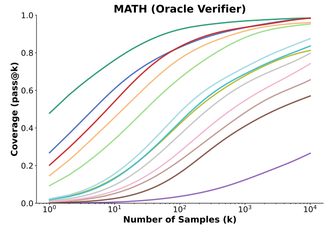
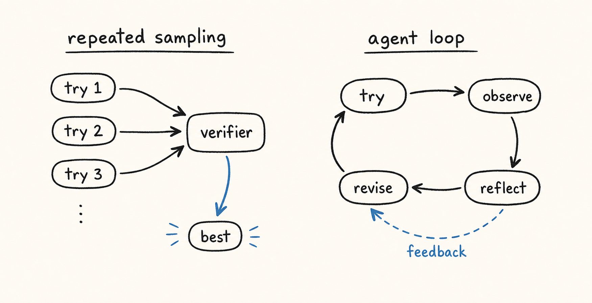
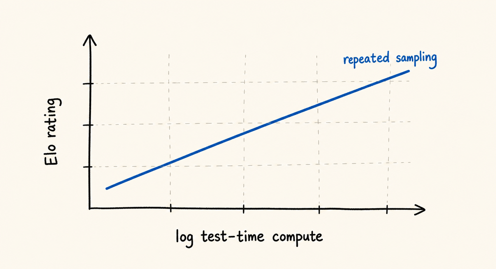
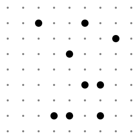
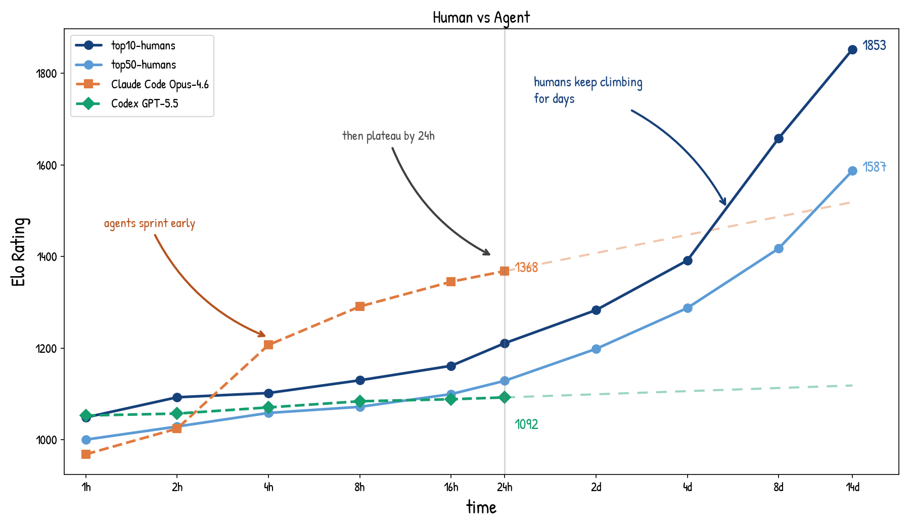
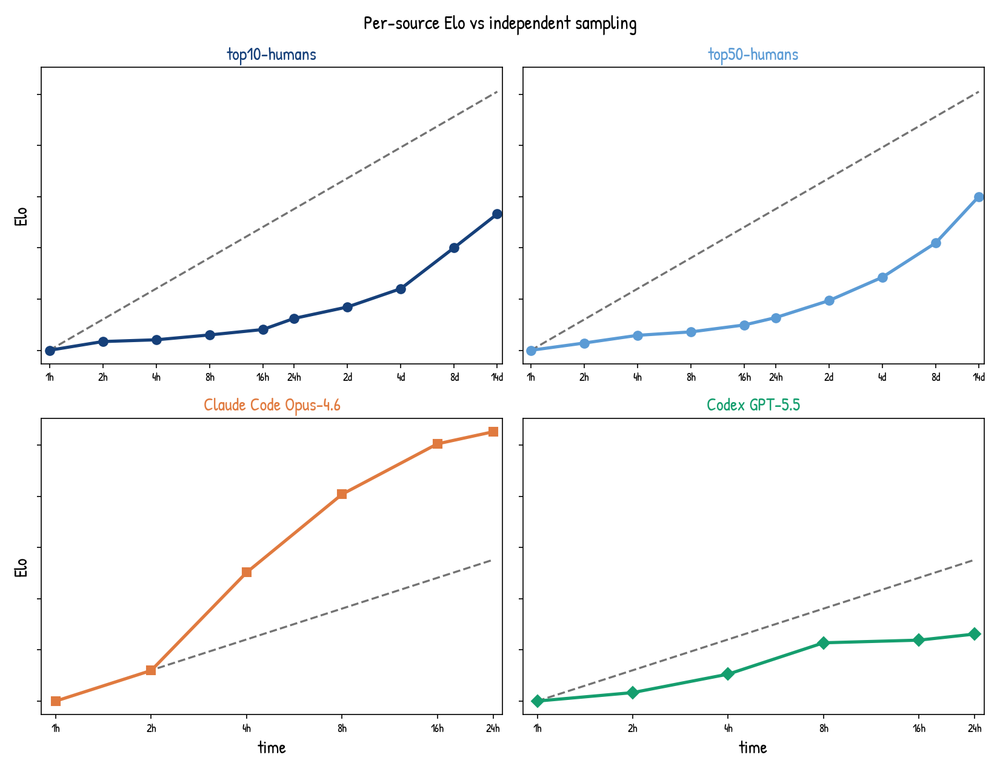

测试时扩展（test-time scaling）讲的是一个朴素的道理：给模型更多推理时间或更多尝试次数，答案质量会上升。但到了智能体（agent）时代，事情变复杂了：智能体能在一次运行中尝试、观察、反思、修正，而不只是机械地重复采样。
这篇由UC Berkeley、UW、Princeton与Bespoke Labs研究者发布的博客，提出了一个清晰的度量框架，并用一场真实的长程编程竞赛，把「人类vs智能体」在长程测试时适应上的差距摆在了台面上。
OpenAI的o1报告最早展示了「更多测试时算力能提升模型表现」。此后大量论文跟进，尤其在代码、数学这类可验证任务上：多采样候选解、用验证器筛选、报告pass@k或覆盖率。常见的曲线是成功率随尝试次数（即log测试时算力）上升，先超线性增长后饱和。

这些研究衡量的是一种「外部」测试时策略：采样多少、怎么验证，都固定在模型之外。模型本身只是被动地一次次独立抽取。
但智能体改写了这个设定。在一次运行里，智能体可以试一个方案、观察结果、反思哪里失败、再调整下一次尝试。这就引出本文研究的核心问题：当智能体随测试时算力变强时，它究竟用上了更好的测试时策略，还是本质上只是在复现「反复采样」？

先把最常见的pass@k曲线背后的最简单模型写下来：反复采样。它把每一次尝试看作来自同一连续分数分布的独立抽取。对单个任务，设单次样本分数为X，成功阈值为 τ，则单次成功概率就是分数超过阈值的概率。
取k次独立样本，pass@k就是「至少一次成功」的概率。在多个任务上平均，就得到随样本数变化的均值pass@k（或覆盖率）曲线。
不过这套评估对智能体很别扭：智能体一旦解出任务通常就停手，并不自然地继续要更多独立样本。对于FrontierCS这类开放任务，更自然的是比较各自得分，但原始分数增益难以解读：把圆填充目标值从1提到2可能轻而易举，从2.35提到2.36却可能需要艰难得多的一步。
因此我们想要一个更简单的比较：当同一个任务上，一个候选比另一个多花了测试时算力，它有多少概率产出更好的答案？沿用反复采样模型，这变成一个成对（pairwise）问题：若候选a有k_a次独立尝试、候选b有k_b次，成对胜率可由两者独立尝试的胜负关系算出。
关键一步来了：Bradley-Terry模型能把成对胜率映射成一维强度标度。若a的BT对数强度为 θ_a、b为 θ_b，则a战胜b的概率由两者强度差决定。可以验证，对反复采样而言，上面的成对胜率恰好等价于「双方强度差随log测试时算力线性增长」：即 θ 随log(k) 线性上升。
于是得到一个极有用的结论：反复采样这种测试时策略，其Elo随log测试时算力呈线性。它提供了一条参照线。要判断一个智能体内部策略的优劣，只需画出它的Elo随测试时算力变化的曲线，与这条线比较：在线上方说明策略优于反复采样，下方说明更差，贴近直线则说明本质上等同于反复采样。

有了这条参照线，就可以问：在真实的长程测试时任务里，智能体和人类分别处在什么位置？
本文研究AtCoder Heuristic Contest 014（RectJoin），一个长程编程与优化赛题。直观地说，RectJoin在网格上给出若干标记点，求解者反复画矩形把点连成不相交的区域，目标是最大化某种得分。它是一个天然的「长程 + 可迭代改进」任务：人类和智能体都能在数小时到数天内不断打磨解法。

人类轨迹。研究者取该赛事最终排行榜上的两组人：顶尖人类选手，以及普通参赛人类，分别用其长时间提交轨迹作为人类侧数据。
智能体设定。用FrontierCS框架复现赛事环境，让智能体在同样的长程约束下反复尝试。测试两套系统：Claude Opus 4.6配Claude Code，以及GPT-5.5配Codex。
度量方式。有了各参与方的「尝试序列」，就能直接估计成对胜率。对任意两方u、v，把u的所有尝试与v的所有尝试两两比较，定义u战胜v的经验概率。这些成对胜率就是喂给Elo拟合的输入。
用L-BFGS从这些成对胜率拟合出Elo评分。所有智能体系统的Elo都用「尝试次数」作为测试时算力的代理轴。
结果相当尖锐：智能体在头几个小时内快速上升，但Elo很快触顶、进入平台期；而顶尖人类选手的Elo在整整两周里持续爬升，远未饱和。换句话说，在长程自适应改进上，人类把智能体远远甩在身后。

还可以对每个参与系统问一个更局部的问题：如果只看「多花了多少测试时算力」这一段，它的Elo增长是线性（贴近反复采样参照线）还是更快？将各来源的Elo曲线与反复采样参照线叠放在一起，就能直观看出谁的策略优于单纯采样。

智能体确实拥有自己的测试时策略，但应当去评估：这种策略带来的增益，是否真的优于「只是多采样几次」。把反复采样作为参照线，是分离「策略红利」的关键。
用反复采样作参照线。若某智能体的Elo随log测试时算力线性增长且斜率与参照线一致，那它的「内部策略」基本等价于反复采样，并未真正学会长程自适应。
把人类作为长程参照。顶尖人类仍展现出持续的自适应改进，这是智能体应当追的目标，而不是只跟采样基线比。
研究更多开放、长程任务。我们需要更多长程任务、更长的运行轨迹，才能把「策略红利」从「算力堆砌」里干净地分离出来。
参考：https://joyemang33.github.io/blog/2026/humans-dont-just-sample/